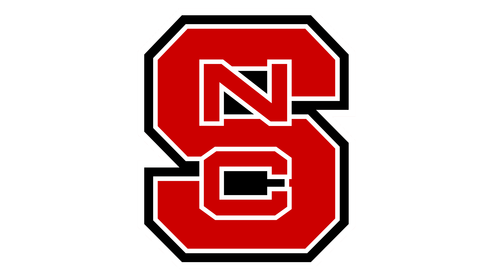
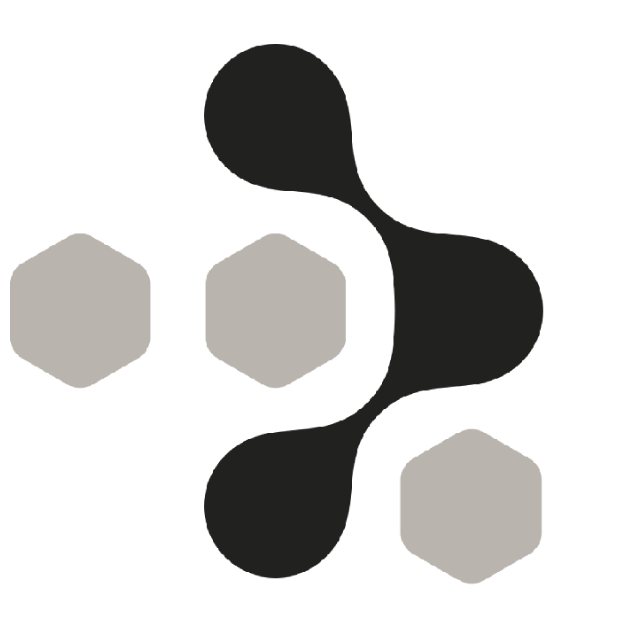
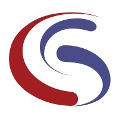
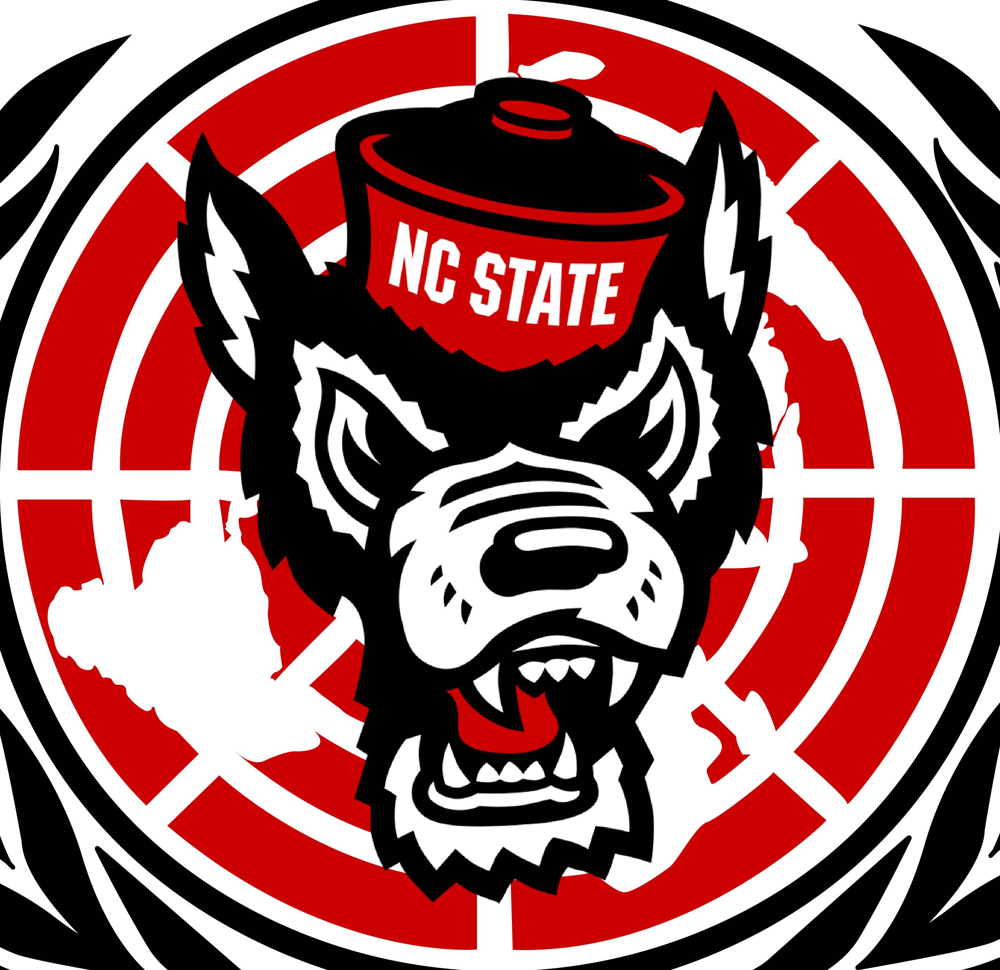
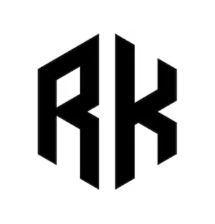
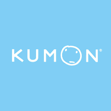

Undergraduate Research Associate | Jan 2025 - Present | Charlotte, NC
Designing and building a wheelspin detection system using various AI/ML techniques for SimStudent, an AI tutor developed by Dr. Noboru Matsuda. Utilizes 20 years' worth of SimStudent learning data supervising a logistic regression model in conjunction with Bayesian Knowledge Tracing techniques to predict if a student is facing a learning plateau and adjusts teaching methodology accordingly.

Full-Time Intern | May 2024 - Jul 2024 | Charlotte, NC
Conducted data analysis on customer feedback and marketing performance to inform decisions. Collaborated with the Chief Strategy Officer to develop data-driven insights into product strategies. Performed material benchmarking and performance testing for the Lumia X1 3D printer.

Full-Time Intern | Apr 2022 - May 2022 | Charlotte, NC
Designed and developed a Java application for a client solution, presenting to the VP and CTO. Applied wireframing, user task flows, and design principles to improve user experience in an agile environment. Gained hands-on experience in full-stack development and industry software practices
Part-Time Intern | Jun 2021 - Jul 2021 | Charlotte, NC
Researched a process to develop customized, 3D printed casts for fracture patients using 3D scanning/printing techniques. Performed cost analysis, design iterations, and tested a scan-to-print process.
Part-Time Intern | Jun 2019 - Jul 2019 | Charlotte, NC
Researched a process to develop customized, 3D printed casts for fracture patients using 3D scanning/printing techniques. Performed cost analysis, design iterations, and tested a scan-to-print process.

President | Apr 2023 - Present | Raleigh, NC
Leading all Global Affairs and Model UN activities for NC State's Model UN Student Organization. Designing trainings to improve members' public speaking skills, managing finances and outreach for travel for nationwide conferences on the collegiate Model UN circuit, and facilitating partnerships with affiliate organizations. Always looking to make a difference through Model UN.

Teacher, Creator, & Performer | Jan 2023 - Present | Raleigh, NC
Providing one-on-one lessons for young, local students. Focused on instilling foundational technique, musical expression, confidence, and a passion for learning. As a creator, analyzed popular trends, identified content gaps, and adapted to user feedback to reach over 1 million aggregate viewers creating instructional piano content.

Part-Time Job | Dec 2019 - Mar 2021 | Charlotte, NC
Tutored students in critical math & reading concepts, ranging from calculus to phonics.